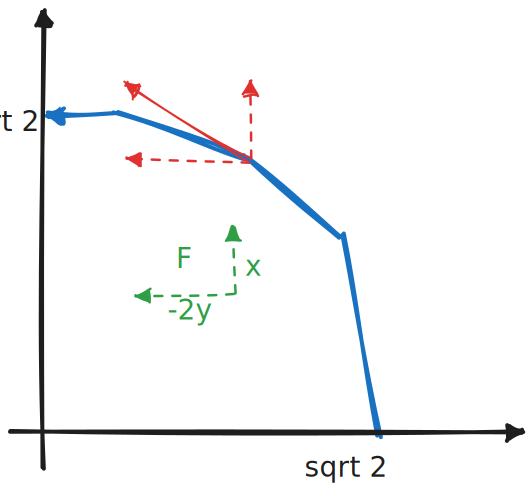
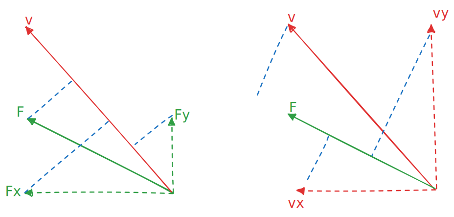

曲线积分
设 为正向圆周 在第一象限中的部分，则曲线积分 的值为

本质上，第一类和第二类积分没有什么区别。
第二类积分说是向量微积分，但实际上积出来仍然是一个实数
如果说第一类曲线积分是对一条绳子的密度进行积分来得到质量，那么第二类曲线积分同样如此，只不过它的每一点的密度 由曲线方向 和向量场 共同决定，即
在本例中，向量场 ，绳子每一点的密度 为 到曲线方向上的投影长度，其值为点积 ：

如果把 分解到同一组正交的基向量上，则
这也是第二类曲面积分总是以 出现的原因，其有一种基本的计算方法是换元到参数方程：
但其实有时候不换元也能做，尽管在能简化计算的情况下通常都换元计算
比如本题是个圆周，所以可以极坐标换元：
如果不换元，就是计算两个方向上的分量：
上式第一个等号两侧为何负号要变为正号？
由上文推理知， 本质是向量场 和 曲线方向 在 轴方向上的投影的长度，如果要拆成两个积分的话，就要将投影拆到 轴上分别积分
非常幸运！本例的这两个向量在整条曲线上都没有正负号的变化，比如 中两个向量始终朝向 轴负方向
上面这个变号其实是非常 ugly 的写法，如果从上面的极坐标形式回过来表示这个过程:
😋😋
应该说，极坐标下在 上进行积分，其仍然是二重积分，而拆成两个一元积分时，本质上是投影到两个一维空间上计算，这样就丢失了方向信息。这也是需要曲线投影方向不变化的原因，这可以从 在换元时是单射看出来